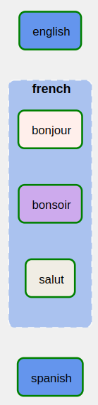
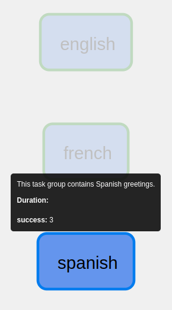
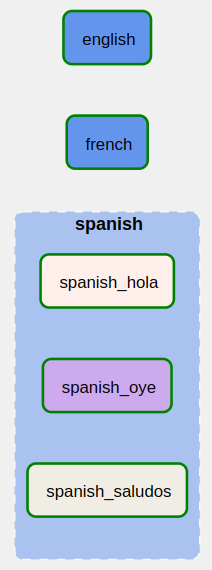

3 Task Groups
In Airflow, a TaskGroup is a fairly arbitrary - but often useful - grouping of tasks. In gusty, you can organize your Task Definition Files into Airflow task groups by simply adding subfolders to your DAG folder, and putting your Task Definition Files in each subfolder. As you might have guessed, the task group id is the same as the subfolder name.
For example, maybe we want our hello_dag to have it tasks organized into separate task groups based on the language of the greeting. Here’s what the updated structure of our hello_dag DAG might look like:
$AIRFLOW_HOME/dags/
│
├── hello_dag/
│ │
│ ├── english/
│ │ ├── hello.yml
│ │ ├── hey.sql
│ │ └── hi.py
│ │
│ ├── french/
│ │ ├── bonjour.py
│ │ ├── bonsoir.sql
│ │ └── salut.yml
│ │
│ ├── spanish/
│ │ ├── hola.py
│ │ ├── oye.sql
│ │ └── saludos.yml
│ │
│ └── METADATA.yml
│
└── hello_dag.pyNow, our Airflow DAG will have three task groups: english, french, and spanish. Each task group will contain the tasks found in each folder. For example, the french task group will contain tasks bonjour, bonsoir, and salut.

By default, gusty does not prefix a task group’s name on to the task name. Any altering of a task name inside of a task group is done so explcitly. How? Just like DAG folders, task group folders can also leverage their own METADATA.yml files.
3.1 Task Group METADATA.yml
You can add a METADATA.yml file to any task group folder. This is useful for when you want to have specific task group behavior, such as different default_args or if you want to prefix or suffix the task group id onto the task id.
Let’s add a METADATA.yml file to our spanish task group subfolder:
dags/
│
├── hello_dag/
│ │
│ ├── english/
│ │ ├── hello.yml
│ │ ├── hey.sql
│ │ └── hi.py
│ │
│ ├── french/
│ │ ├── bonjour.py
│ │ ├── bonsoir.sql
│ │ └── salut.yml
│ │
│ ├── spanish/
│ │ ├── METADATA.yml
│ │ ├── hola.py
│ │ ├── oye.sql
│ │ └── saludos.yml
│ │
│ └── METADATA.yml
│
└── hello_dag.pyThe contents of this task group METADATA.yml file might look something like this:
tooltip: "This task group contains Spanish greetings."
prefix_group_id: TrueThe above METADATA.yml will give the spanish task group a tooltip, when hoving over the node in the Airflow UI’s graph view, and all tasks in the task group will be prefixed with spanish_, such as spanish_oye and spanish_saludos.
Here is a look at the tooltip on hover:

And here is look at the prefixed Spanish tasks:

Lastly, just like tasks, task group METADATA.yml can take advantage of dependencies blocks. So if a lot of tasks depend on the same upstream task, it might make sense to put them in the same task group folder, and set the upstream dependency in the METADATA.yml.
3.2 Why Use Task Group Folders?
Task groups folders serve a few powerful purposes at scale:
They help keep Task Definition Files organized.
They can help keep parts of a DAG logically compartmentalized.
They can help keep dependencies between sets of tasks easier to manage.